You need a native app. That's what we've been told repeatedly since Apple first announced the iPhone App Store. And perhaps you do. Native apps can make sense, depending on an organization's size and needs.
But what about potential customers who don't have your app? Or current customers on a desktop computer? What about people with limited space on their phones who delete apps to make room for other things? What is their experience like?
This is where Progressive Web Apps (sometimes referred to as PWAs) shine. They combine the best features of the web with capabilities previously only available to native apps. Progressive Web Apps can be launched from an icon on the home screen or in response to a push notification. They load nearly instantaneously and can be built to work offline.
Best of all, Progressive Web Apps simply work. They are an enhancement to your website. No one needs to install anything to use a Progressive Web App. The first time someone visits your website, the features of a PWA are available immediately — no app stores (unless you want them). No gatekeepers. No barriers.
You may also like: Developing a PWA Using Angular 7.
Requirements
To start with this tutorial you must install the following:
- Stable node version 8.9 or higher (https: // nodejs.org/en/download/).
- Yarn (https://yarnpkg.com)
- Git.
As a starting point for the tutorial, clone this Github repository:
git clone https://github.com/petereijgermans11/progressive-web-appthen, move to the following directory:
cd pwa-article/pwa-app-manifest-initand install the dependencies through:
npm i && npm startOpen your app on: http:// localhost:8080
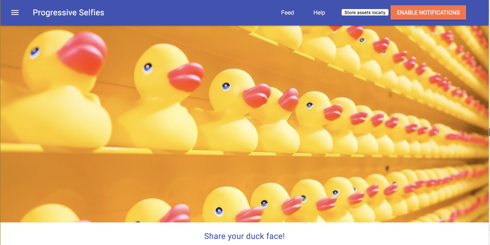
Initial landing pagePublic url for your mobile
There are many ways to access our localhost: 8080 from a remote mobile device. You can use ngrok for this. See: https://ngrok.com/
Install ngrok using:
npm install -g ngrokAnd run the following command in your terminal. This command generates a public url for you.
ngrok http 8080Then browse to the generated url on your mobile in Chrome.
What Are the Technical Components of a PWA?
A PWA has three important technical components that work together, including:
Manifest file, the Service Worker, and the PWA must run under https.
Three components of PWA
Manifest File
The Manifest file is a configuration JSON file that contains the information from your PWA, such as the icon that appears on the home screen when it is installed, the short name of the web app, or the background color. If the Manifest file is present, Chrome automatically activates the banner for installing the web app (the "Add to Home Screen" button). If the user agrees, the icon will be added to the home screen, and the PWA will be installed.
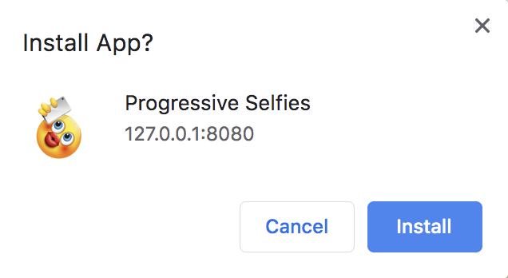
Install PWA
Create a Manifest.json
A Manifest.json file for a PWA looks like this:
{
"name": "Progressive Selfies",
"short_name": "PWA Selfies",
"icons": [
{
"src": "/src/images/icons/app-icon-192x192.png",
"type": "image/png",
"sizes": "192x192"
},
{
"src": "/src/images/icons/app-icon-512x512.png",
"type": "image/png",
"sizes": "512x512"
}
],
"start_url": "/index.html",
"scope": ".",
"display": "standalone",
"background_color": "#fff",
"theme_color": "#3f51b5"
}Tell the Browser About Your Manifest
Create a Manifest.json file at the same level as your index.html file.
When you have created the Manifest, add a link-tag to your index.html (between the other links tags).
<link rel=”manifest” href=”/manifest.json”>
Manifest Properties
You must at least specify the property, short_name or name. Short_name is used on the user's home screen. Name is used in the app's install prompt. When a user adds your PWA to their home screen, you can define a set of icons that the browser should use.
These icons are used in places, such as the home screen and the app launcher. The start_url property tells the browser where it should start the application. The scope defines the set of URLs that the browser considers to be within your app and is used to decide when the user has left the app and should be bounced back out to a browser tab. Your start_url property must be within the scope. The display property indicates the following display modes:
- Fullscreen: all available space is used for the app.
- Stand-alone: the application has the look and feel of a stand-alone application.
The background_color property is used on the splash screen when the application is started.
From this point, the "Add to Home Screen" button does not work yet. But, you can already experiment with the Manifest file. There are currently various tools with which you can generate your Manifest file with, such as https://app-Manifest.firebaseapp.com/..
Add the Manifest to Your Application
Generate your own Manifest and place it at the same level as the index.html file. Check your Chrome Developer Tools and see if your Manifest is active. Right-click on the homepage of the Progressive Selfies App and select "Inspect". Select the "Application" tab and choose "Manifest". Restart the server with npm start if necessary.
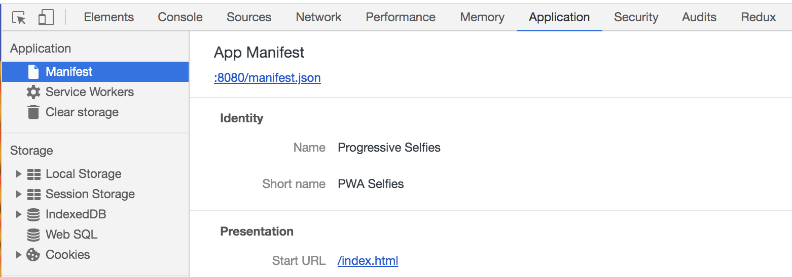
Starting Manifest file
What Is a Service Worker?
A Service Worker (SW) is just a piece of JavaScript that works as a proxy between the browser and the network. A SW supports push notifications, background sync, caching, etc. The core feature discussed in this tutorial allows PWAs to intercept and handle network requests, including programmatically managing a cache of responses.
The reason this is such an exciting API is that it allows you to support offline experiences by taking advantage of cache, giving developers complete control over a user's experience.
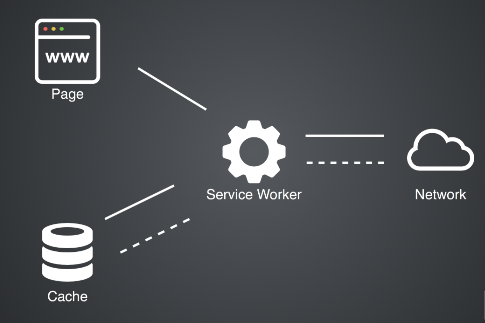
Service Worker workflow
The Service Worker Lifecycle
With Service Workers, the following steps are taken for the basic setting:
- Register your SW. You must first register it. If the SW is registered, the browser automatically starts the installation based on an install event.
- When the SW is installed, it receives an activate event. This activation event can be used to clean up resources used in earlier versions of an SW.
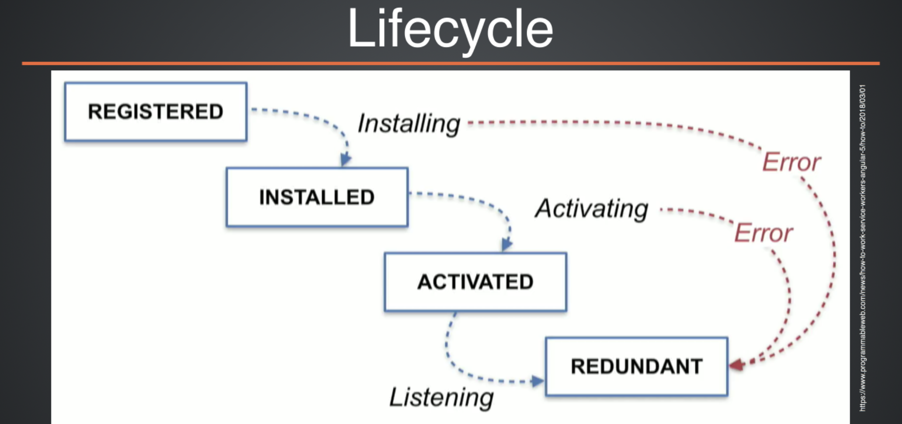
Service Worker lifecycle
For the SW, create an empty file named sw.js at the same level as your index.html file. And in the index.html file, add a base tag (between the other links tags in the <head> section). This is the base URL for all your relative links in your app:
<base href=”/”>Finally, add the code below in src/js/app.js to register the SW. This code is activated during the "loading" of the first page.
This code checks whether the API of the SW is available in the navigator property of the window object. The window object represents the browser window. (Javascript and the navigator property is part of the window object.). If the SW is available in the navigator, the SW is registered as soon as the page is loaded.
You can now check whether a SW is enabled in the Chrome Developer Tools in the Application -> Service Workers tab. Refresh the page for this!
window.addEventListener('load', () => {
const base = document.querySelector('base');
let baseUrl = base && base.href || '';
if (!baseUrl.endsWith('/')) {
baseUrl = `${baseUrl}/`;
}
if ('serviceWorker' in navigator) {
navigator.serviceWorker.register(`${baseUrl}sw.js`)
.then( registration => {
// Registration was successful
console.log('ServiceWorker registration successful with scope: ', registration.scope);
})
.catch(err => {
// registration failed :(
console.log('ServiceWorker registration failed: ', err);
});
}
}); Why Can't I Register my Service Worker?
This could happen for a couple of reasons:
- Your app could not be running under HTTPS. During development, you can use the SW via localhost. But, if you deploy it on a site, then you need an HTTPS setup.
- The path of the SW is not correct.
- Update on reload must be checked during development!
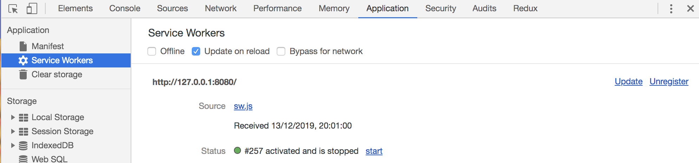
Checking update on reload
Service Worker Events
In addition to install and activate, we have a messagingevent. This event takes place when a message is received from another script in the web app. The fetchevent is triggered when a page from your site requires a network resource. It can be a new page, a JSON API, an image, a CSS file, etc.
The sync event is sent if the browser previously detected that the connection was unavailable and signals the Service Worker that the internet connection is working. The push event is invoked by the Push API when a new push event is received from the backend.
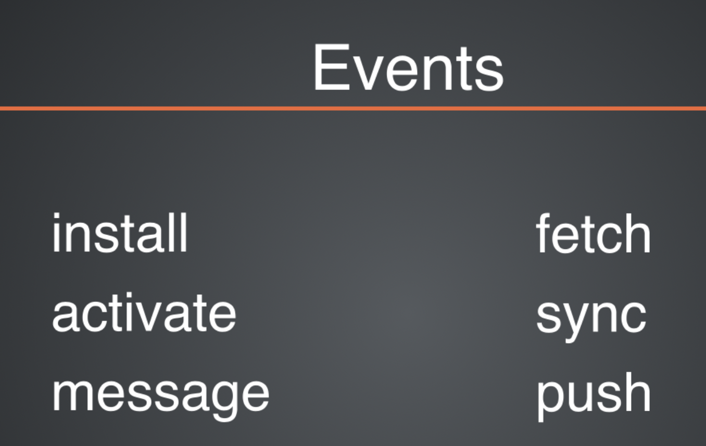
Service Worker events
Add the following code to your SW to listen to the lifecycle events (install and activate):
self.addEventListener('install', event => {
console.log('[Service Worker] Installing Service Worker ...', event);
event.waitUntil(self.skipWaiting());
});
self.addEventListener('activate', event => {
console.log('[Service Worker] Activating Service Worker ...', event);
return self.clients.claim();
});The install callback is calling the skipWaiting() function to trigger the activate event and tell the Service Worker to start working immediately without waiting for the user to navigate or reload the page.
The skipWaiting() function forces the waiting Service Worker to become the active Service Worker. The self.skipWaiting() function can also be used with the self.clients.claim() function to ensure that updates to the underlying Service Worker take effect immediately.
In this context, the self-property represents the window object (ie your browser window).
Add to Home Screen Button
The "Add to Home Screen button" allows a user to install the PWA on their device. In order to actually install the PWA with this button, you must define a fetch event handler in the SW. Let's fix that in the sw.js.
self.addEventListener('fetch', event => {
console.log('[Service Worker] Fetching something ....', event);
// This fixes a weird bug in Chrome when you open the Developer Tools
if (event.request.cache === 'only-if-cached' && event.request.mode !== 'same-origin') {
return;
}
event.respondWith(fetch(event.request));
});Check Update on reload, Unregister your SW in Chrome Dev tools, and refresh your screen. Go to your PWA (on localhost:8080), click the "Customize button" in Chrome, and select: Install Progressive Selfies ....
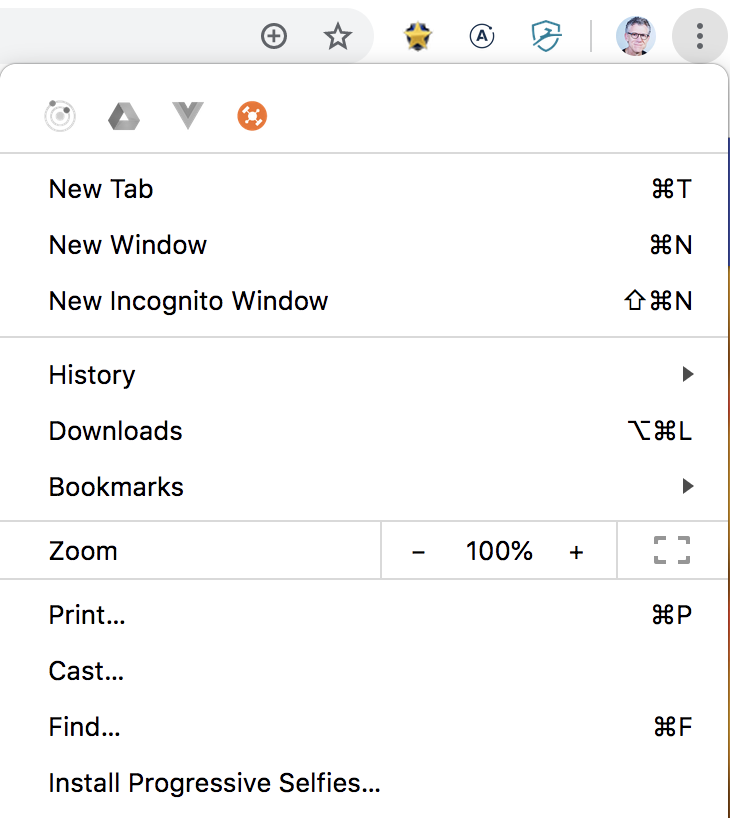
Installing Progressie Selfies
After this, the "install banner" is shown.
Install banner
Service Worker Caching
The power of Service Workers lies in their ability to intercept HTTP requests. In this step, we use this option to intercept HTTP requests and responses to provide users with a lightning-fast response directly from the cache.
Precaching During Service Worker Installation
When a user visits your website for the first time, the SW starts to install itself. During this installation phase, you can fill the cache with all pages, scripts, and styling files that the PWA uses. Complete the sw.js file as follows:
const CACHE_STATIC_NAME = 'static';
const URLS_TO_PRECACHE = [
'/',
'index.html',
'src/js/app.js',
'src/js/feed.js',
'src/lib/material.min.js',
'src/css/app.css',
'src/css/feed.css',
'src/images/main-image.jpg',
'https://fonts.googleapis.com/css?family=Roboto:400,700',
'https://fonts.googleapis.com/icon?family=Material+Icons',
];
self.addEventListener('install', event => {
console.log('[Service Worker] Installing Service Worker ...', event);
event.waitUntil(
caches.open(CACHE_STATIC_NAME)
.then(cache => {
console.log('[Service Worker] Precaching App Shell');
cache.addAll(URLS_TO_PRECACHE);
})
.then(() => {
console.log('[ServiceWorker] Skip waiting on install');
return self.skipWaiting();
})
);
});This code uses the install event and adds an array of URLS_TO_PRECACHE files at this stage. You can see that once the cache is open (caches.open), you can then add files using the cache.addAll(). The event.waitUntil() method uses a JavaScript promise to know how long installation takes and whether it succeeded.
The install event calls the self.skipWaiting() to activate the SW directly. If all files have been successfully cached, the SW will be installed. If one of the files cannot be downloaded, the installation step fails. In the Chrome Developer Tools, you can check whether the cache (in the Cache Storage) is filled with the static files from the URLS_TO_PRECACHE array.
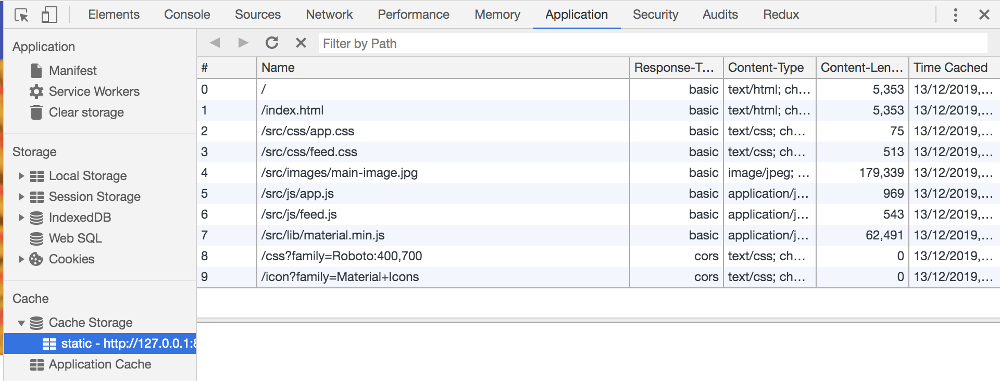
Checking cache
But, if you look in the Network tab (even after a refresh) the files are still fetched over the network. The reason is that the cache is primed and ready to go, but we are not reading assets from it. In order to do that we need to add the code in the next listing to our Service Worker in order to start listening to the existing fetch event.
self.addEventListener('fetch', event => {
console.log('[Service Worker] Fetching something ....', event);
event.respondWith(
caches.match(event.request)
.then(response => {
if (response) {
console.log(response);
return response;
}
return fetch(event.request);
})
);
});We are checking if the incoming URL matches anything that might exist in our current cache using the caches.match() function. If it does, we return that cached resource, but if the resource doesn't exist in the cache, we continue as normal and fetch the requested resource.
After the Service Worker installs and activates, refresh the page and check the Network tab again. The Service Worker will now intercept the HTTP request and load the appropriate resources instantly from the cache instead of making a network request to the server.
Now, if we set Offline mode in the Network tab our cached app will look like this:
Application after caching
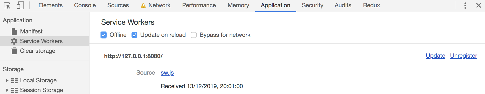
Service Workers
Background Fetch
The Background Fetch API is a SW background feature that makes it possible to download large files, movies, podcasts, etc. in the background. During the fetch/transfer, your user can choose to close the tab or even close the entire browser.
This will not stop the transfer. After the browser is opened again, the transfer will resume. This API can also handle poor accessibility. The progress of the transfer can be shown to the user, and the user can cancel or pause this process.
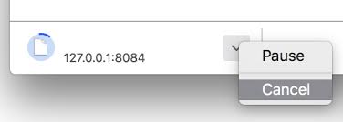
Pausing Background Fetch
Finally, your PWA has access to the data/sources that have been retrieved.
Experimental Web Platform Features
Background Fetch works if you have enabled " Experimental Web Platform features" via the URL:
chrome://flags/
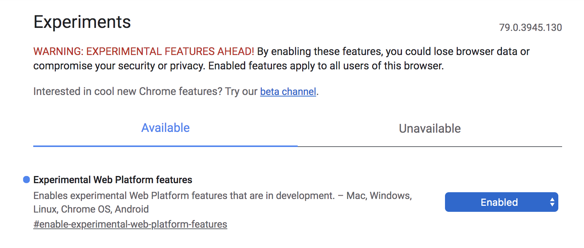
Enabling Background Fetch
Below is an example of how to implement such a Background Fetch.
Add this button with an ID of "bgFetchButton" in your index.html file (among the other buttons in the header).
<button id=”bgFetchButton”>Store assets locally</button>Then, add the code for executing a Background Fetch in your app.js in the load event handler:
window.addEventListener(‘load’, () => {
// ..
bgFetchButton = document.querySelector(‘#bgFetchButton’);
bgFetchButton.addEventListener(‘click’, async event => {
try {
const registration = await navigator.serviceWorker.ready;
registration.backgroundFetch.fetch(‘my-fetch’, [new Request(`${baseUrl}src/images/main-image-lg.jpg`)]);
} catch (err) {
console.error(err);
}
});
// ..
});
The code above performs a Background Fetch under the following conditions:
- The user clicks on the button with the ID of bgFetchButton (the onClick event will go off)
- The SW must be registered.
This check and the Background Fetch takes place within an async function because this process must be performed asynchronously without blocking the user.
Fill the cache in sw.js
self.addEventListener(‘backgroundfetchsuccess’, event => {
console.log(‘[Service Worker]: Background Fetch Success’, event.registration);
event.waitUntil(
(async function() {
try {
// Iterating the records to populate the cache
const cache = await caches.open(event.registration.id);
const records = await event.registration.matchAll();
const promises = records.map(async record => {
const response = await record.responseReady;
await cache.put(record.request, response);
});
await Promise.all(promises);
} catch (err) {
console.log(‘[Service Worker]: Caching error’);
}
})()
);
});This code consists of the following steps:
- Once the Background Fetch retrieval is complete, your SW will receive the Background Fetch success event.
- Create and open a new cache with the same name as the registration.id.
- Get all records through
registration.matchAll(). - Build an array in an asynchronous way with promises by going through the records. Wait until the records with responses are ready and then save these responses in the cache with
cache.put()(see the Cache Storage in the Application tab). - Finally, execute all the promises, through
Promise.all().
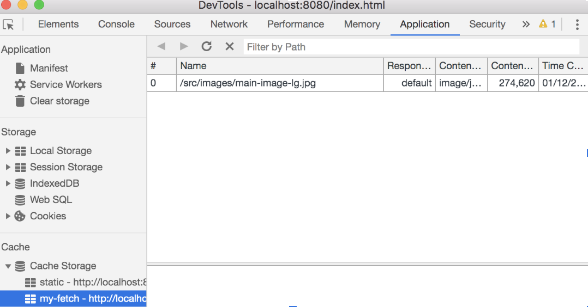
Final output
Conclusion
After this introduction, you can continue with an extensive tutorial that you can find in: https://github.com/petereijgermans11/progressive-web-app/tree /master/pwa-workshop. This tutorial focuses on issues such as generating your SW through Workbox, Caching strategies, Web Push Notifications, and Background synchronization with an IndexedDB API and various other new Web APIs.
See also my next article. In this article I will discuss some advanced PWA features that provide access to your hardware APIs, like: Media Capture API, Geolocation API and the Background Sync API.
Follow or like me on twitter https://twitter.com/EijgermansPeter


Would you like to leave a comment?